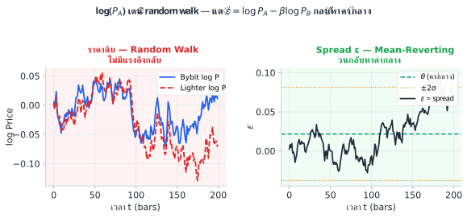
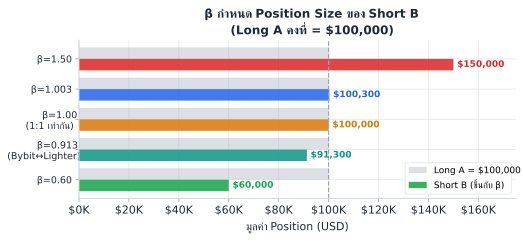

สูตรข้างบนคือรูป default (log price) ของ family ที่ใหญ่กว่า: ε = F(A) − β·F(B) ซึ่ง F(·) เลือกได้ 5 แบบตามสถานการณ์ (log / absolute / basis / funding / implied vol) — ดู §1.6 และ decision tree เต็มรูปในบทที่ 4B · เล่มนี้ใช้ log price เป็นเส้นเรื่องหลักเพราะเป็นแบบที่ปลอดภัยสุดสำหรับ pair ทั่วไป
ลองเทียบสองกลยุทธ์:
Short BTC ที่ $65,000 เพราะ "แพงเกินไป" — แต่ราคาวิ่งไป $90,000
ขาดทุน $25,000 ต่อ BTC และ ไม่มีเหตุผลว่าราคาจะ "กลับมา" ที่ $65,000
Random walk ไม่มีแรงดึงกลับ — ราคาอาจไปเรื่อยๆ
Bybit BTC perp ราคา $65,050, Lighter BTC perp ราคา $64,980
Spread = $70 (สูงกว่าปกติที่ ~$20)
Trade: Short Bybit, Long Lighter — รอให้ spread กลับมา $20
แรงดึงกลับมีอยู่จริง: ทั้งสองตลาดต้อง track ราคา BTC เดียวกัน

นี่คือจุดที่หลายคนเข้าใจผิดที่สุด: β บอกว่าต้อง trade ในอัตราส่วนเท่าไร เพื่อให้ ε ไม่ drift
สมมติ: A ขึ้น +3% ทุกครั้งที่ B ขึ้น +5% (A sensitive น้อยกว่า B)
ถ้า trade 1:1 → ε เปลี่ยน = +3% − +5% = −2% ทุกครั้ง → ε drift ลง (ไม่ดี)
ถ้า trade 1:0.6 → ε เปลี่ยน = +3% − 0.6×5% = 3% − 3% = 0% ทุกครั้ง → ε flat ✓
ดังนั้น β = 3%/5% = 0.6 คือ "อัตราส่วนที่ถูกต้อง"
หมายเหตุ: β = sensitivity ratio นี้เป็นเพียงสัญชาตญาณในกรณีอุดมคติที่ไม่มี noise — ในทางปฏิบัติ β ที่เชื่อถือได้ประมาณจาก OLS regression ในบทที่ 4

| β | ถ้า Long A = $100,000 | ต้อง Short B เท่าไร | ความหมาย |
|---|---|---|---|
| β = 1.00 | $100,000 | $100,000 | A และ B sensitive เท่ากันพอดี |
| β = 0.60 | $100,000 | $60,000 | B volatile กว่า → short น้อยกว่า |
| β = 1.50 | $100,000 | $150,000 | B stable กว่า → short มากกว่า |
| β = 1.003 | $100,000 | $100,300 | Bybit↔Lighter: ต่างนิดหน่อย แต่ไม่ใช่ 1:1 |
ใน production system ค่า β ไม่ได้ fix ไว้ตลอด แต่ re-calibrate ทุก rolling window ประมาณ 1–7 วัน
โดยใช้ OLS regression ของ log return: r_A = β·r_B + ε
ถ้า β เปลี่ยนเร็ว (เช่น ±5% ภายใน 1 วัน) มักเป็น signal ว่า cointegration ระหว่าง A↔B เริ่มแตก
ควร reduce position ก่อน ไม่ใช่ average down
ราคาทั้งสองเกือบเท่ากัน (~$65,000) แต่ β ≠ 1 เพราะ:
ไม่ใช่ทุก "spread" ที่จะ trade ได้ ε ที่ดีต้องผ่านเกณฑ์:
| คุณสมบัติ | ความหมาย | วัดอย่างไร |
|---|---|---|
| Stationary | ε วนอยู่รอบค่ากลาง ไม่ drift ออกไปเรื่อยๆ | ADF test (บทที่ 5) |
| Mean-reverting | ยิ่งห่างจาก θ มาก แรงดึงกลับยิ่งแรง | Half-life (บทที่ 3) |
| Half-life trade-able | กลับเร็วพอสำหรับ strategy ที่วางแผน | 2h–2wk เหมาะสม |
| Spread profit > ค่าธรรมเนียม | σ_ε ใหญ่กว่า fee+slippage | Edge analysis (บทที่ 19) |
| F(·) | สูตร ε | ใช้กับ |
|---|---|---|
| Log price | log(P_A) − β·log(P_B) | Bybit↔Lighter perp (เล่มนี้) |
| Absolute price | P_A − β·P_B | ราคาระดับเดียวกัน, unit เดียว |
| Basis | P_perp − P_spot | Perpetual vs spot arbitrage |
| Implied Vol | IV_A − β·IV_B | Options volatility surface arb |
| Calendar spread | P_front − β·P_back | Futures term structure |
ตารางนี้เป็นแค่ตัวอย่างเรียกน้ำย่อย — วิธีเลือก F(·) จากสถานการณ์จริง (decision tree 4 คำถาม + กับดักข้ามประเภท) อยู่ในบทที่ 4B: ε Design และแต่ละแบบมีบทกลยุทธ์ของตัวเอง: basis → บทที่ 13 · absolute/ratio → บทที่ 13B · funding → บทที่ 13C · calendar → บทที่ 17 · IV → บทที่ 22
ราคา BTC ระดับ $65,000 → ถ้าใช้ P_A − β·P_B ตรงๆ spread จะเปลี่ยนตามระดับราคา (high price = large absolute spread)
log(P_A) − β·log(P_B) คือ log ratio → เป็น % deviation → ไม่ขึ้นกับระดับราคา → stationary กว่า
สูตร \(\varepsilon = \log P_A - \beta \log P_B\) ใช้ได้เฉพาะเมื่อ A กับ B cointegrated จริงๆ
— นั่นคือมีแรงดึงกลับในระยะยาว ถ้าความสัมพันธ์นั้นสลายตัว (regime change, listing/delisting, regulatory event)
ε จะไม่ mean-revert อีกต่อไป แต่ถ้า model ยังสั่ง entry เพราะ "ε ห่างจาก θ มาก" ก็จะ average down
เข้าไปในขาดทุนไม่หยุด
สัญญาณเตือน: half-life ยาวขึ้นกว่าปกติ 3× หรือ ε ทะลุ 4σ และไม่กลับมาใน window ที่คาด
→ หยุด trade ทันทีและทบทวน pair
Bybit BTC perp ขึ้น 2.1% ในชั่วโมงที่แล้ว ขณะที่ Lighter BTC perp ขึ้น 2.3%
จาก calibration: β = 0.913
ถาม: ถ้า Long Bybit $500,000 ต้อง Short Lighter เท่าไร?
Short Lighter = β × Long Bybit = 0.913 × $500,000 = $456,500
ไม่ใช่ $500,000 เพราะ Lighter ขยับ 2.3% ต่อทุก 2.1% ของ Bybit → sensitive กว่า → short น้อยกว่า
ตรวจสอบ: ε change = 2.1% − 0.913×2.3% = 2.1% − 2.1% = 0% ✓
trader ใช้ β=1.0 (แทนที่จะเป็น β=0.913) trade Bybit↔Lighter มา 30 วัน
สังเกตว่า ε ค่อยๆ ลดลงทุกวัน แม้ไม่ได้เปิด position
ถาม: อธิบายว่าเกิดอะไรขึ้น และ drift นี้ส่งผลอย่างไรต่อ P&L ถ้า trader มักจะ short spread?
สาเหตุ: ใช้ β=1.0 แต่ Lighter sensitive กว่า (β จริง = 0.913) → ε = log(Bybit) − 1.0×log(Lighter) ลดลงทุกครั้งตลาดขึ้น เพราะ Lighter ขึ้นมากกว่า
ผลต่อ P&L: ถ้า short spread (short Bybit, long Lighter) อยู่แล้ว → drift ลงช่วย (กำไร) แต่เป็นเพราะ β ผิด ไม่ใช่ alpha จริง เมื่อ drift หยุดหรือกลับทิศ จะขาดทุนหนัก
บทเรียน: drift ใน ε เสมอ = signal ว่า β ผิด ต้องหา β ใหม่
คุณต้องการ trade spread ระหว่าง BTC June futures ($65,200) กับ BTC September futures ($66,100)
ถาม: ควรใช้ F(·) แบบไหน และ spread นี้คือ "basis" ประเภทไหน?
F(·) ที่เหมาะ: Absolute price (P_Jun − β·P_Sep) เพราะทั้งสองเป็น BTC futures หน่วยเดียวกัน ราคาใกล้กัน
หรือจะใช้ log: log(P_Jun/P_Sep) = log(65200/66100) ≈ −0.0137 (≈ −1.37%)
ประเภท basis: Calendar spread (term spread) — เกิดจาก cost of carry และ convenience yield ของแต่ละ expiry มักกลับสู่ fair value เมื่อ delivery date ใกล้เข้ามา
Ch.1 Synthetic Process | ต่อไป → Ch.2: Stochastic Calculus พื้นฐาน